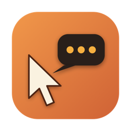

Press a shortcut, talk, and drag over the part of the screen you mean. Pointer pastes the screenshot and your words into Claude Code. Or let it watch a screen while you work or sit in a call: it records the screen, your mic and the Mac's own audio, then writes up what happened, what you may have missed and the follow-ups.
Each shortcut does one job. The first three paste into the assistant you used last. Watch and Listen paste nothing; they save a page you or your agent read later.
Talk, then drag over an area. Sends a short pause after you stop speaking.
Record a screen, window or area while you narrate. Press again to stop.
Scroll through the front window; Pointer keeps each new page and stitches the text.
A silent session: screen at one frame a second, your mic as You, Mac audio as Others.
Watch, plus one suggested question every 30 seconds of new speech, shown in a small pill.
With the /pointer skill in Claude Code, you name a screen or window and say start. Say stop when you are done. Behind it is a small command your agent runs, which any other app can run too.
pointer start benq and confirms what is being recorded.follow to move with the mouse.pointer peek (a screenshot now plus recent speech) on a schedule, and speaks up only when it changes.| Command | What it does |
|---|---|
pointer targets | every screen (with the one under the mouse) and every window, by app and title |
pointer start <what> | start a watch session on a screen name, screen 2, main, an app or title word, or follow. Add --listen for questions |
pointer peek [min] | a screenshot of what is being watched, right now, and what was said in the last few minutes |
pointer status | is a session running, for how long, and which are still being written up |
pointer stop / cancel | stop and write it up, or stop and discard |
With more than one screen, pick Follow my pointer in the share panel (or pointer start follow). Pointer records the screen the mouse is on, and switches once the mouse has stayed on another screen for a second, so crossing the gap does not flip it back and forth.
Each switch is a new piece of the recording. The write-up places frames from every screen on one timeline.
A pulsing amber border sits on the edges of the watched screen, or just outside the watched window and moves with it. You can click through it, and recordings leave it out.
The menu bar shows the elapsed time, and a self-refreshing card in the library shows a session while it is being written up.
Every capture gets its own folder in ~/Pictures/Pointer and a page in the library window: the video with captions, a timeline with key frames, clicks and talking, and the write-up with timestamps that jump the video.
| File | What it holds |
|---|---|
digest.md | the write-up: what happened, what you may have missed, follow-ups, key moments |
transcript.txt | [m:ss] You: and [m:ss] Others: lines, each side transcribed on its own |
screen.txt | every line of text read off each key frame, with the app and window |
clicks.txt | what you clicked, by the button, link or field label. Keystrokes are never recorded |
session.json | all of it, structured, for the MCP server and the page |
recording.mov | the recording with both audio sides |
The MCP server reads every capture, plus meeting notes from Cuecard. Your agent searches by what was said, what was on screen, or the write-up.
pointer_listrecent captures with time, kind, title and length
pointer_searcha query across said, screen text and write-ups, returning captures and [m:ss] lines
pointer_getone capture, or latest: the write-up plus a timeline that interleaves what was said with what was on screen
claude mcp add -s user pointer -- node ~/claude-apps/pointer/mcp/server.jsHandle lets an agent read and act in your signed-in Chrome. tab rec start t7 brings that tab forward and has Pointer record its window while Handle clicks and types; tab rec stop ends it. tab watch … --record records for as long as a watch runs.
Start and stop go into Handle's audit trail, next to each action.
The pointer command is a two-line wrapper over Pointer --ctl, and every reply is JSON. A script, a skill or a headless claude -p run can start a recording, check it with peek, and read the result through the MCP server.
Run a command once a write-up is saved with defaults write com.vaibhav.pointer afterWriteUp "/path/to/script".
Needs macOS 26 on Apple silicon, Xcode command line tools, and Claude Code for the write-ups. Everything runs on your Mac: speech is on-device, and only the write-up step sends the session's text to Claude through your own claude login.
build.sh signs Pointer with a local identity so macOS keeps its permissions across rebuilds, installs it to ~/Applications and launches it.
git clone https://github.com/abhitsian/pointer.git ~/claude-apps/pointer
cd ~/claude-apps/pointer && ./build.shMicrophone for your voice, Screen Recording for captures (relaunch Pointer after granting it), and Accessibility to paste into your assistant and name what you click. The Permissions menu shows which are missing.
Add the MCP server, and the pointer command if you want chat or scripts to start recordings.
claude mcp add -s user pointer -- node ~/claude-apps/pointer/mcp/server.js
printf '#!/bin/sh\nexec "$HOME/Applications/Pointer.app/Contents/MacOS/Pointer" --ctl "$@"\n' > ~/.local/bin/pointer && chmod +x ~/.local/bin/pointerPress ⌃⌥C, say what is wrong, drag over it. Or say "watch my main screen" in Claude Code.
Watch sessions record other people when the Mac's audio is on. Tell people when you capture a meeting this way; Teams and Zoom only announce their own recordings.